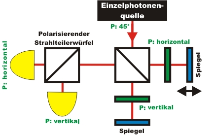
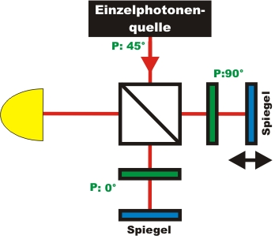
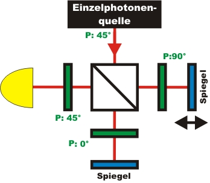

Interference chapter 4:
Which path does the single photon take in the interferometer?
In the previous chapter an experiment was carried out showing that a single photon interferes with itself, is indivisible and reacts completely at random. If the photon is indivisible, it should have taken a definite path in the interferometer. With different "markings" in each path of the interferometer, the single photon can be tagged with information on which path it took. In the following chapter, each photon is to be stamped with a path marking. In the last paragraph of this chapter, the marking stamped on the photon is to be deleted after the event with a "quantum-eraser".
Path marking by polarisation
Which possibilities are there to stamp a marking onto photons? The simplest method is polarisation. The single photon source sends photons with a polarisation of 45°. In the right interferometer path, with the aid of a polarization filter only horizontally polarized photons are transmitted (pic. 1). All other photons in this path are absorbed at the polarization filter. In the lower interferometer path, only vertically polarized photons are transmitted by the polarization filter. This means that behind the interferometer, the photons carry with them information as to which path they took. Behind the interferometer, a polarizing beam splitter cube with two detectors for single photons is set up. This beam splitter cube transmits holizontally polarized photons, while reflecting vertically polarized photons. With the detectors, each photon can be allocated to exactly one path.

pic. 1: Path marking in the interferometer by polarisation P
Path marking in the expriment
In the following interactive experiment, variable polarisation filters are used in each interferometer path. Each polarisation filter has two fixed settings: 0° for vertical polarisation and 90° for horizontal polarisation. With the aid of the grey buttons in the interactive experiment, each polarisation filter can be adjusted to the desired setting. In the interactive experiment, the polarizing beam splitter is not yet employed (pic. 2).
If both polarisation filters are positioned vertically or horizontally, the paths are not marked. As soon as both polarisation filters are put at a 90° angle, the paths are marked and can be clearly distinguished. Carry out the following experiment with different settings of the polarisation filter. During measuring you can adjust the settings of the polarisation filters. Which behaviour can you observe with regards to interference and path information?

pic. 2: Path marking with variable polarisation filters: 0° und 90°
|
|
Observation and explanation:
If the paths cannot be distinguished in the interferometer, the single photon interferes with itself. A noticeable increase and decrease of the interference rate is apparent. If the paths can be distinguished in the interferometer (as would be the case when the polarisation filters are at a 90° angle), however, the interference pattern disappears. In this case it is irrelevant whether the path information behind the interferometer is evaluated by a polarizing beam splitter cube or not, like in the interactive experiment above. The mere existence of the information suffices to make the interference pattern disappear.In general, it can be said that the interference of a photon with itself and the information about the path taken are mutually exclusive. This is an important basic rule for all kinds of quantum objects. Interference and which-path-information act complementary to each other.
The same phenomenon can also be observed at the double slit. As soon as the two slits are marked, e.g. by polarisation screens set at a 90° angle, the interference pattern disappears.
The phenomenon of interference and path information can also be observed in bright laser light in the interferometer or at the double slit. The behaviour observed in bright light does, however, not have anything to do with quantum physics, as it can be explained with polarized classic electromagnetic waves. Waves with orthogonal polarisation cannot interfere, which is why the interference pattern disappears. The experiment with bright light can still be used as an analogy to the actual quantum phenomenon, though.
Erasing the path marking: the quantum eraser
Can the path information stamped on the photon behind the interferometer be erased again? It is indeed possible to erase the path information by using a polarisation filter set at 45° (pic. 3), which can be done in the interactive experiment above. Before the polarisation filter set at 45°, every photon can be definitely associated to the path taken. Behind the beam splitter set at 45°, it can no longer be determined which path the photon has taken. The path information has been erased. If in the above interactive experiment, both polarization filters are at a right angle, such a quantum eraser can be applied via a grey pushbutton. Carry out the interactive experiment with and without the quantum eraser. Which behaviour can be observed when the quantum eraser is used where a path information exists?

pic. 3: The path information stamped on the photons is erased by the polarization filters set at 45°
Observation and explanation:
If a path information exists and the quantum eraser is used, interference can immediately be observed again. Due to the quantum eraser being set at 45°, the counting rate decreases by 50%, as only 50% of the photons are transmitted at the additional polarization filter. The remaining 50% of the photons are absorbed at this polarization filter. The path information available in the interferometer is erased by the polarization filter set at 45°. How does the single photon in the interferometer know whether or not there is a quantum eraser at the end?The same phenomenon of the quantum eraser can also be observed with bright light in the interferometer, or at the double slit with marked paths. Again, the explanation for this is polarization of a classic electromagnetic wave, and has nothing to do with quantum physics. The experiment with the quantum eraser with bright light can, however, be used effectively as an analogy to the actual quantum phenomenon.
Original data from the: Interference and path information
To chapter 5: For experts:
frequency correlation and white light
Back to overview
Autor: P.
Bronner, Dezember 2008
Translation: G. Murphy